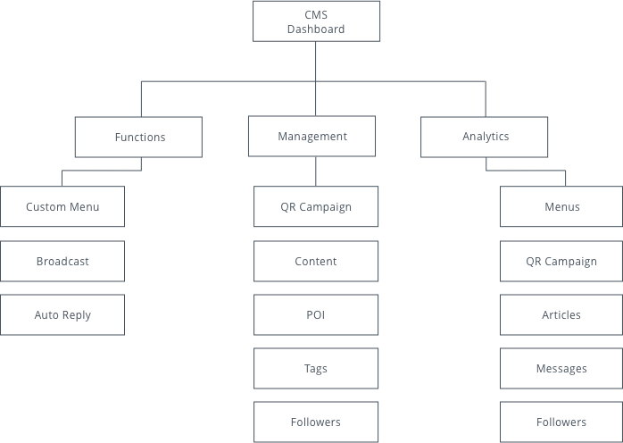
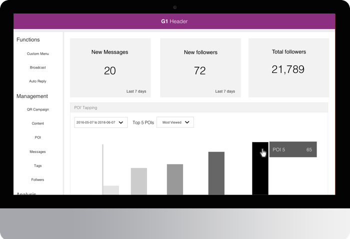
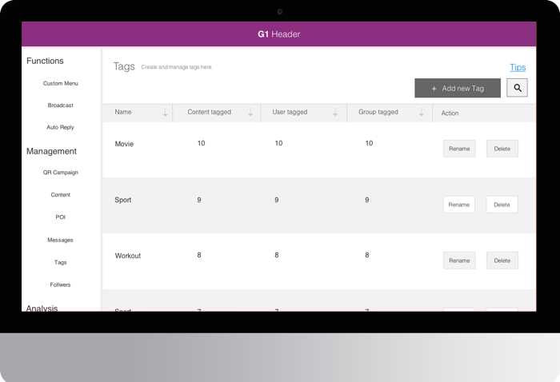
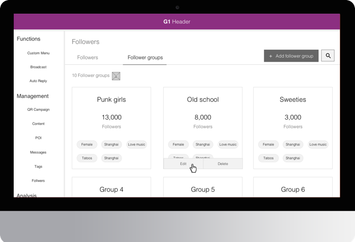
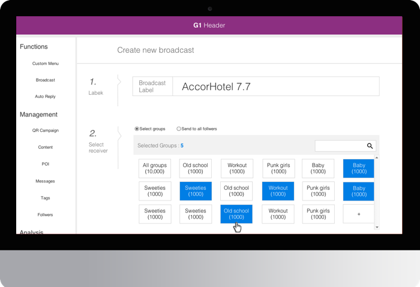
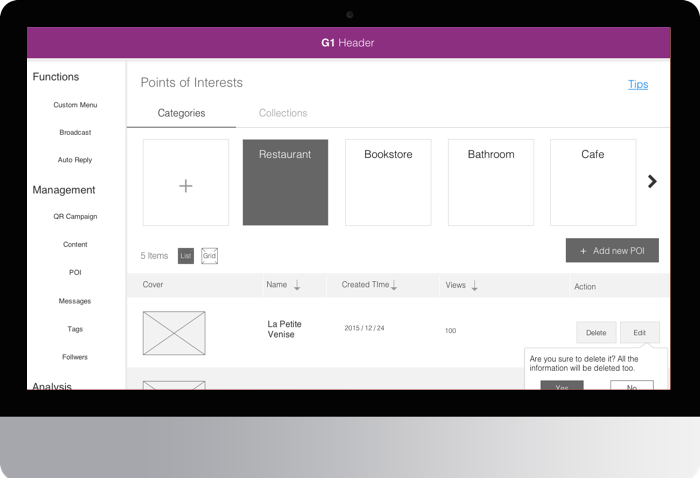
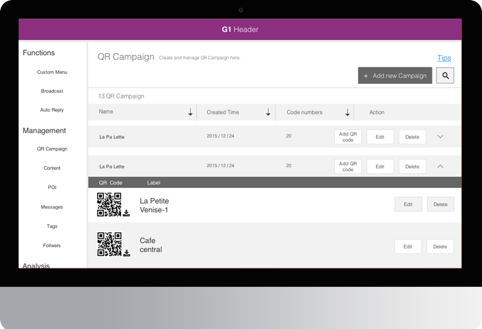

Solution
Rapid iteration helps the team understand what the client really wants
I used Axure to build prototype and interaction effects. Here was the information architecture of the
CMS:

The index page of the online platform was the dashboard page. What we wanted to do here was to make
clients get a quick feedback of their accounts’ live feed. The dashboard was the central admin panel
where administrator can access the different data collected by CMS, such as the total number of
followers, the broadcast views of groups, the ranks of QR campaign. By the way, clients can customize
the dashboard page based on their hobbies.

As I described above, tags were the bridge connecting articles and users. Clients could track the
interest of followers by adding tags to published contents. Therefore, followers' behaviour can be
defined by their actions with contents, such as view, like and share.

Besides using tags to define followers, group segmentation also supported many other attributes to
create group, such as gender, age, region, language, following time, active time, and QR campaign
labels. We didn’t add QR campaign labels as an attribute at the first time, however, when we reviewed
the draft wireframe, we thought it’s a good idea to build more relationships among platform’s modules,
proving clients more options.

Targeted broadcast scheduling allowed clients send customized news to certain groups. Also, it supported
schedule broadcasts ahead of time, which was a very demanding function for many businesses based on our
survey. Supposed your business would like to send morning news to users per day at 6 a.m., which was
difficult to manually achieve without errors everyday. Now, this function relieved all your pains.

By using POI finders, clients could set interesting places around followers in two interaction modes. One
was that followers could get a POI list by sending their location to CMS Back-end. Moreover, given the
fact that WeChat account supported embedded HTML5 website, we designed a more friendly usage situation —
followers could jump to a customized POI H5 website by tabbing a menu item.

By creating a QR campaign, a QR code would be generated automatically attaching with the campaign. Then
clients could track users who scanned the QR code to analyze their behaviors. Besides, the Analytics
module could calculate the total scanning number of each campaign so clients could know each campaign’s
performance.

Through one and half month of research and experimentation, the boss finally
enthusiastically passed our design proposition.